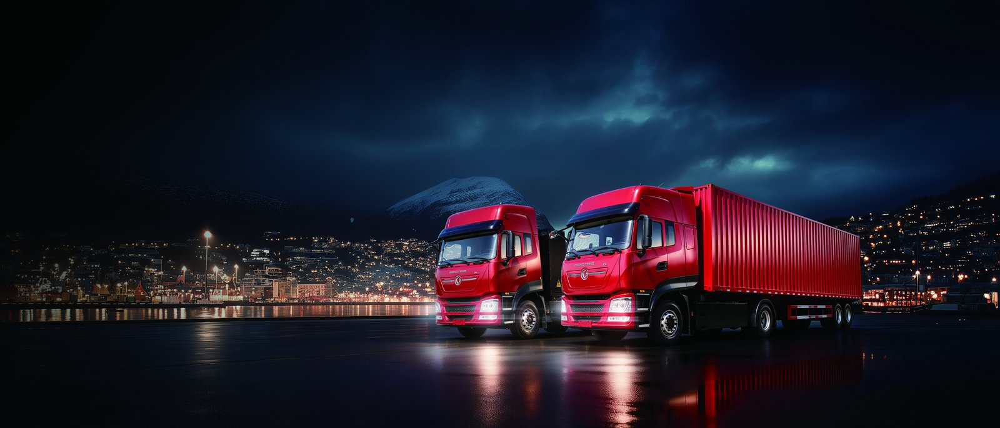

The Fergana Valley is Uzbekistan’s agricultural heartland — the country’s largest fruit, vegetable and cotton-producing region, ringed by the terminals of Kokand, Margilan and Fergana city, and feeding the national consumption centre of Tashkent 300 km northwest. Every harvest season, millions of tonnes of perishable produce move from orchard, field and greenhouse to the capital’s wholesale markets and onward to export corridors toward Kazakhstan and Russia. That flow runs today on diesel box and curtainside trucks, often on punishing seasonal peaks. This article examines the Dongfeng KT5L electric cargo truck in the Fergana produce corridor, with real numbers on range, seasonal duty, TCO and import logistics for Uzbek agri-logistics.
Agricultural produce freight has properties that make it an excellent first EV truck application. Routes are fixed and seasonal: Fergana city to Tashkent is 300 km (a long single charge, but the valley’s inner flows — Kokand to Margilan, Andijan to Fergana, farm to packhouse — run 20-120 km daily and sit comfortably inside the KT5L’s range). The work is shift-based and predictable outside the peak, and produce consolidates at packhouses and wholesale terminals that are natural charging sites. Critically, produce is time- and temperature-sensitive, and the electric truck’s smooth, vibration-free drivetrain and optional electric-refrigeration draw (no diesel reefer unit) protect fragile fruit better than a rattling diesel box. The diesel reefer unit alone burns 1.5-3 L/hour idling at market — an expense the electric alternative removes.
| Parameter | KT5L Electric Cargo Truck |
|---|---|
| GVW / payload | 6-7.5 t class / 2.5-3.5 t payload |
| Battery | 130-160 kWh CATL LFP, liquid-cooled |
| Motor | LvKong 110-140 kW peak / 900-1,100 Nm |
| Real-world range (loaded, valley duty) | 190-230 km |
| DC charge 20-80% | ~35 min at 90-120 kW |
| Body options | 18-24 m³ curtainside, box or electric reefer |
| Gradeability | ≥25% — handles valley approach roads loaded |
| FOB price band | US$44,000-56,000 |
The inner-valley range is the practical story: Kokand-to-Fergana (60 km), Andijan-to-Margilan (25 km), farm-to-packhouse (10-40 km) all sit inside a single charge with large reserve, so the KT5L charges nightly at the packhouse or terminal where the produce already consolidates. For the 300 km Tashkent run, the truck handles the valley-side collection and the inbound empty/partial leg; the long-haul leg is best paired with a midpoint charger under development, or run by the operator’s diesel fleet until charging extends — a staged migration we model per operator rather than an all-or-nothing switch.
Uzbekistan industrial electricity runs roughly US$0.07-0.10 per kWh, while diesel retails at about US$0.70-0.80 per litre. A 6-7.5 t diesel box truck on valley produce duty burns 0.24-0.30 L/km — roughly US$0.21 per kilometre. The KT5L consumes 0.60-0.75 kWh/km; at US$0.09/kWh, about US$0.06-0.07 per kilometre. On 3,000 km per month (high in harvest season, lower off-season), the monthly energy saving is about US$420 per truck, roughly US$5,000 per year. Maintenance adds US$2,000-2,500 annually — no oil, clutch, injectors or DPF, and brake pads lasting 2-3x longer. Against a purchase premium of US$15,000-20,000, payback lands at 28-40 months. The CATL battery warranty — 8 years or 4,500 cycles — outlasts payback by years; for the electric-reefer variant, the diesel reefer fuel saving (1.5-3 L/h at market) adds another US$1,500-3,000 per season, strengthening the case for temperature-controlled produce.
The Fergana Valley’s packhouses, cold stores and wholesale terminals are the natural charging anchor: produce already consolidates there, they have three-phase power, and trucks sit during loading and overnight. A regional operator with 10-15 KT5Ls needs 2-3 dual-gun 90-120 kW DC chargers spread across the main packhouse sites, plus overnight AC at each bay, a 300-500 kVA aggregate service class the local grid provisions for agri-processing loads. We file the utility application on order day; charger lead time (10-14 weeks) exceeds the overland transit from China via the Kyrgyz or Kazakh gateways (12-20 days). Seasonal peak planning matters: harvest surges double daily kilometres, so we size chargers for peak-month throughput, not the off-season average.
Solar is a strong fit for valley packhouses: Fergana receives 4.5-5.0 peak sun hours, and a 100-200 kWp canopy over the packhouse yard offsets 35-50% of charging energy while shading produce during loading. Several Uzbek agri-processors already run solar for cold storage; adding truck charging to that generation is incremental and hedges the tariff entirely.
Uzbekistan grants customs and tax preferences to electric vehicles under its green-economy measures, against standard duty on diesel trucks, and the Fergana Valley is served by overland routes from China via the Kyrgyz border (Osh-Kashgar corridor) and the Kazakh gateway, with transit of roughly 12-20 days. We supply the full export dossier including UN R100 battery certification, Russian/Uzbek-language manuals and the spare-parts schedule. For operators serving the national corridor, our Uzbekistan market page covers the Tashkent, Samarkand and Bukhara logistics networks where the same KT5L platform and charging playbook apply, and where the produce export chain toward Kazakhstan and Russia creates a natural cross-border electrification roadmap.
Service support ships with the fleet: a two-year fast-moving parts kit, telematics-based remote diagnostics with our engineering desk (Russian-speaking support available), and CATL module stock reachable across Central Asia in 10-18 days. The LvKong drivetrain’s sealed, low-part-count design is valuable in an agricultural environment where dust and harvest-season duty cycles are hard on diesel aftertreatment — the electric truck has no DPF to clog with field dust.
The strongest first adopters are the large packhouses and wholesale-terminal operators with captive collection routes and on-site power, the export-oriented fruit groups running temperature-controlled produce toward Tashkent and beyond, and the cooperative fleets that consolidate smallholder harvest. Uzbekistan’s low power price and the valley’s fixed, consolidating freight make the KT5L a lower-cost truck to own on its duty cycle; the electric-reefer option turns a major diesel expense into a grid charge. The operators who electrify their valley flows first will protect more of each harvest’s margin and build the charging backbone that the longer Tashkent export run will plug into as it matures.
A practical rollout for a valley packhouse operator starts with five to eight KT5Ls on the inner-valley collection loops, where range is never a constraint and charging sits at the packhouse. As the depot-charging habit and telematics confidence build, the fleet extends to the Andijan and Kokand distribution runs, then pilots the electric-reefer variant on high-value fruit bound for Tashkent’s wholesale markets. The diesel fleet is retained for the 300 km capital run until a midpoint charger at a waypoint terminal closes the gap — typically a 90-120 kW unit at a roadside consolidation point that also serves the export corridor toward Kazakhstan. We model this staged plan per operator rather than proposing an abrupt switch, because produce margins are thin and seasonal cashflow matters; the electric truck must pay for itself inside the harvest cycles that fund the business, not on a five-year horizon. The numbers above show it does, on the inner-valley duty that dominates daily kilometres, and the electric-reefer option converts a major diesel expense into a grid charge.
Ready to electrify your fleet? Contact Shaanxi Fenghan Trading — authorized Dongfeng EV truck exporter. WhatsApp: +86 153 1943 1311 | Email: sales@fenghan-trade.com | dongfengevtrucks.com
🌐 Our Network: Fenghan Trade (SAGMOTO/SHACMAN Truck Export) · SAGMOTO cargo truck flatbed box stake